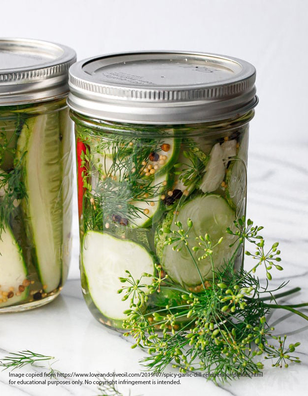

Refrigerator Pickles

Homemade refrigerator pickles are a cool,
crunchy treat!
I was shocked when I found out how easy refrigerator pickles are to
make. Not only are they delightful using the base recipe, there are
hundreds of variations you can make using different vegetables and spices.
Ingredients
- 1.5 quarts water
- 2 cups white vinegar
- 1/3 cup pickling salt
- 4-5 lbs pickling cucumbers
- 1/3 cup diced onion
- 1 tsp whole mustard seed
- 1/2 tsp red pepper flakes
- 1 tsp whole peppercorn
- 6 cloves of garlic - peeled and lightly crushed to release
oils
- 6 heads of fresh dill
Directions
- Prepare your jars by making sure they are clean and placing
equal amounts of peppercorns, chili peppers, smashed
garlic, onion, fresh dill, and mustard seed in each jar.
- In a pot, heat your water ,vinegar and pickling salt.
- While it's heating, clean and slice cucumbers, and place
in the jars.
- Once the salt water brine is boiling, add brine to each of
the jars filled with cucumbers and place the lid on top.
- Let sit on the counter for 3 days, shaking occasionally.
Place in the fridge for up to 4-5 months.